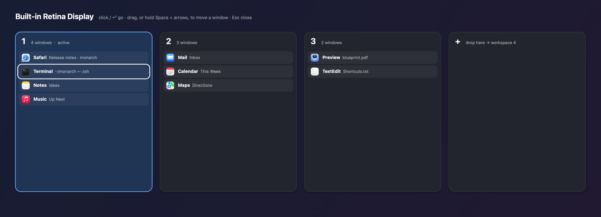

Monarch
A lightweight window manager for macOS. Snap windows from the keyboard, give every display ten workspaces without macOS Spaces, switch windows instead of apps with ⌘Tab, and see everything at once in the overview. Free, open source, written in Swift.
macOS 15 or later · or brew install --cask pankaj1980patel/monarch/monarch after brew tap pankaj1980patel/monarch https://github.com/pankaj1980patel/monarch

Features
Window snapping
Halves, quarters, thirds and two-thirds from the keyboard. Press ⌃⌥ ← again to go from ½ to ⅓ to ⅔.
Workspaces without Spaces
Ten per display, switched instantly with ⌥ 1…9 and ⌥ 0. Windows return exactly where they were, even after a restart.
Overview
Every workspace on every display as a card. Drag windows between them, or use the keyboard.
Window switcher
⌘Tab lists windows, not apps, and raises only the one you pick. ⌘` stays in the current workspace.
Auto focus
Move the mouse to another display and the window you last used there gets focus.
Trackpad gestures
Four fingers switch workspaces, three fingers up open the overview. A resting thumb is ignored.
Built to stay out of the way
| No polling | Driven by hotkeys, Accessibility notifications and a listen-only mouse tap. Idle means idle. |
| Privacy | No screenshots, no Screen Recording permission, no network access. Only Accessibility. |
| Resilient | Each app gets its own queue with a timeout, so a frozen app can't freeze your window manager. |
| Plain-text config | One JSON file, checked before it's applied. Every shortcut can be changed or turned off. |
Get started
Download, move Monarch.app to Applications, right-click it and choose Open the first time, then allow it under Privacy & Security → Accessibility. Press ⌃⌥ / to see every shortcut.
Read the full guide, or the switching guide if you're coming from Rectangle, AeroSpace, yabai or Hammerspoon.